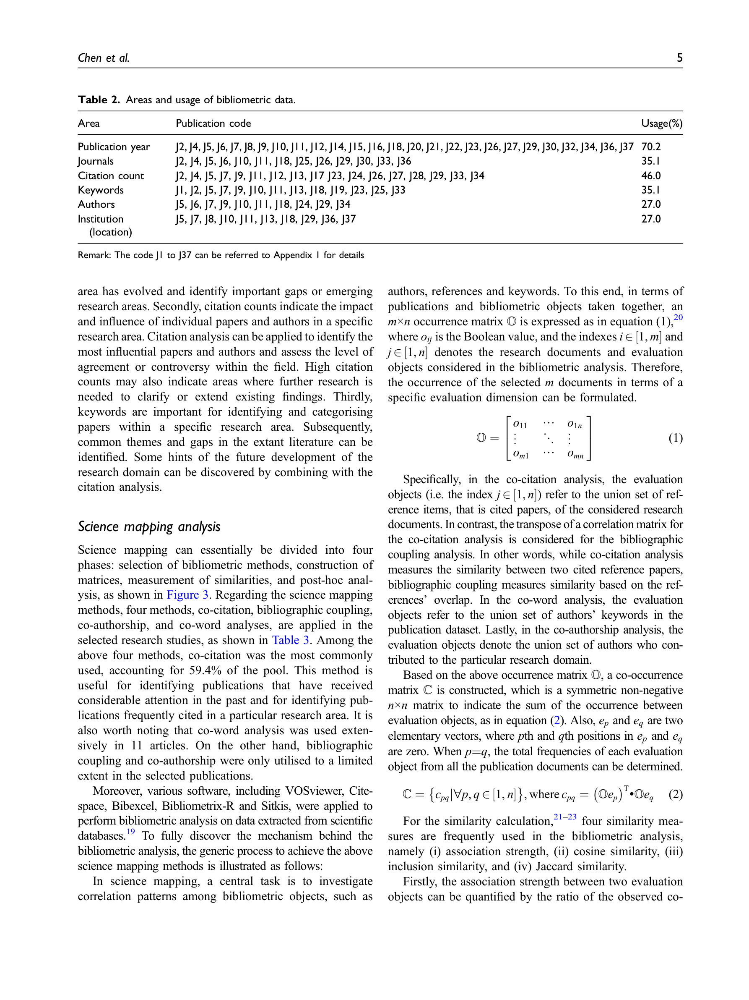
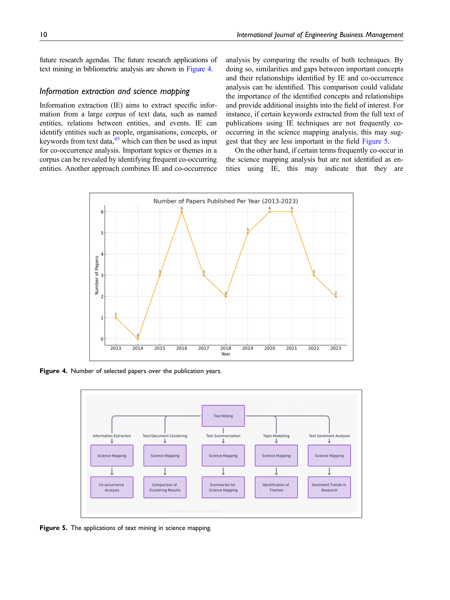

Figure 1
저자: Haojing Chen, YP Tsang, CH Wu | 날짜: 02/2023 | Journal: International Journal of Engineering Business Management | DOI: 10.1177/18479790231222349
Figure 1
WoS Core Collection에서 highly cited paper 중 JCR Q1/ABDC A 이상/AJG 3* 이상 저널의 37편 bibliometric review 논문을 분석하여, science mapping의 4단계 프로세스(방법 선택 → occurrence matrix 구축 → similarity 측정 → post-hoc 분석)를 체계화하고, co-citation이 59.4%로 가장 많이 사용되는 방법임을 확인했다. 이를 바탕으로 text mining 5대 기법(information extraction, document clustering, topic modeling, text summarization, sentiment analysis)과 science mapping의 통합 가능성을 매핑하여, topic modeling/text summarization/sentiment analysis가 아직 충분히 탐구되지 않은 영역임을 제시한다.

Figure 2

Figure 3

Figure 4

Figure 5
총평: Science mapping의 수학적 프로세스를 통합적으로 정리하고 text mining과의 교차 매핑을 통해 연구 기회를 제시한 유용한 개관이나, 실증적 검증 없이 개념적 제안에 그치며 선정 기준의 과도한 제한으로 표본 대표성에 한계가 있다.